Single cell RNA-seq class 2
Analysis steps continued
Simplified steps
Many of the steps involved in processing the data are executed using a succinct set of steps shown below. Much of our class today will be devoted to understanding the purpose of each of these steps and key parameters that can affect the results.
Note that for many of these functions take a SingleCellExperiment as input, modify the SingleCellExperiment, and return a SingleCellExperiment. Others return a vector or data.frame.
# normalize data
clusters <- quickCluster(sce)
sce <- computeSumFactors(sce, clusters=clusters)
sce <- logNormCounts(sce)
# get variable genes
dec <- modelGeneVarByPoisson(sce)
top <- getTopHVGs(dec, prop=0.1)
# get PCA and UMAP
sce <- runPCA(sce, subset_row = top)
sce <- runUMAP(sce, dimred = "PCA")
# cluster cells
sce$clusters <- clusterCells(sce, use.dimred = "PCA")
# get markers
mrks <- scoreMarkers(sce, sce$clusters)Rerun steps from previous class
# load data
library(tximport)
tx <- tximport(
here("data/block-rna/scrna/pbmc/alevin/quants_mat.gz"),
type = "alevin"
)
# setup gene ids
sce <- SingleCellExperiment(list(counts = tx$counts))
ah <- AnnotationHub()
ens_db <- ah[["AH113665"]]
gene_names <- mapIds(ens_db,
keys = rownames(sce),
keytype = "GENEID",
column = "SYMBOL"
)
rowData(sce)$gene <- gene_names
rowData(sce)$gene_id <- rownames(sce)
rownames(sce) <- uniquifyFeatureNames(
rowData(sce)$gene_id,
rowData(sce)$gene
)
# drop non/low expressed genes
rowData(sce)$n_cells <- rowSums(counts(sce) > 0)
sce <- sce[rowData(sce)$n_cells >= 10, ]
# basic QC
is_mito <- startsWith(rowData(sce)$gene, "MT-")
sce <- addPerCellQCMetrics(sce, subsets = list(Mito = is_mito))
sce$pass_qc <- sce$subsets_Mito_percent < 20 & sce$sum > 1000 & sce$detected > 500
# subset data
sce <- sce[, sce$pass_qc]
sceclass: SingleCellExperiment
dim: 20858 4565
metadata(0):
assays(1): counts
rownames(20858): DDX11L2_ENSG00000290825 WASH7P ... MT-ND6 MT-CYB
rowData names(3): gene gene_id n_cells
colnames(4565): GCTGCAGTCCGATCTC ACTATGGAGGTCCCTG ... CTGGATCCACCGTACG
TACAACGGTCTCGCGC
colData names(7): sum detected ... total pass_qc
reducedDimNames(0):
mainExpName: NULL
altExpNames(0):Normalizing data
To normalize we will use 3 functions from the scran package. The normalization entails crude clustering to group related cells, identifying a cell-specific normalization factor (size factor), then scaling the counts by this factor and log transforming the data (with a pseudocount). The algorithm is described in detail in the following paper and in the R documentation (?scuttle::computePooledFactors)
Lun AT, Bach K, Marioni JC. Pooling across cells to normalize single-cell RNA sequencing data with many zero counts. Genome Biol. 2016 Apr 27;17:75. doi: 10.1186/s13059-016-0947-7. PMID: 27122128; PMCID: PMC4848819.
# set seed to obtain the same result on each execution of quickCluster
set.seed(20231023)
clusters <- quickCluster(sce) # returns vector of cluster assignments
sce <- computeSumFactors(sce, clusters = clusters) # add "sizeFactor" to colData
sce <- logNormCounts(sce) # adds new assay called logcountslogcounts(sce)[50:60, 1:4]11 x 4 sparse Matrix of class "dgCMatrix"
GCTGCAGTCCGATCTC ACTATGGAGGTCCCTG ATTTCTGTCTCTATGT TATCTGTAGGTGATAT
CPTP . 0.2645668 . .
TAS1R3 . . . .
DVL1 . 0.2645668 . .
MXRA8 . . . .
AURKAIP1 0.3500082 1.9327619 0.2923841 0.7922116
CCNL2 0.6314635 . 0.7432885 0.5731981
MRPL20-AS1 0.3500082 0.2645668 0.2923841 .
MRPL20 0.8668712 1.1425125 0.9249737 0.7922116
RN7SL657P . . . .
MRPL20-DT . . . 0.3148810
ATAD3C . . . . Get variable genes
set.seed(00010101) # set seed to obtain the same result on each execution of modelGeneVarByPoisson
dec <- modelGeneVarByPoisson(sce) # returns data.frame of statistics
top <- getTopHVGs(dec, prop = 0.1) # return vector of top 10% most variable genes
top[1:4][1] "LYZ" "S100A9" "S100A8" "HLA-DRA"We can plot the mean expression against variance to see the trend, and visualize the top variable genes. These genes are often marker genes that are uniquely expressed in specifi cell populations.
top_genes <- as.data.frame(dec[top[1:10], ])
top_genes$genes <- rownames(top_genes)
ggplot(as.data.frame(dec), aes(mean, total)) +
geom_point() +
geom_text(
data = top_genes,
aes(label = genes)
) +
stat_function(fun = function(x) metadata(dec)$trend(x))
How many variable genes to use? Depends on the data, generally use more variable genes with more complex and heterogeneous data. 1,000 - 2,000 is a reasonable starting point. Explore the impact of changing the getTopHVGs() arguments n or prop on the PCA, UMAP, and clustering.
PCA
We next perform PCA, but only on the normalized data from the top variable genes. By default runPCA will return the top 50 PCs, this can be changed with the ncomponents argument.
set.seed(101010011) # runPCA uses a specialize form of PCA that has a random component
sce <- runPCA(sce, subset_row = top)We can plot the PCA using plotPCA(). Here I’ve colored the PCA by the expression of the CD3D gene, a general marker of T-cells
plotPCA(sce, color_by = "CD3D")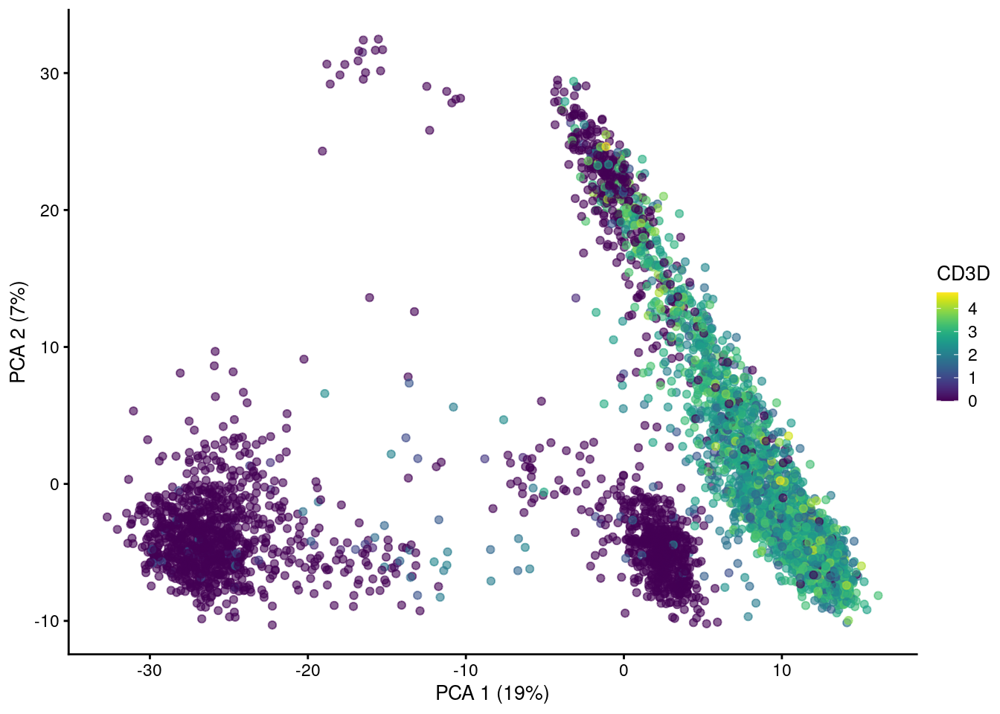
PCs beyond 1 and 2 show additional patterns in the data.
plotPCA(sce, ncomponents = 4, colour_by = "CD3D")The amount of variation captured in each PC is a useful metric to examine.
percent.var <- attr(reducedDim(sce), "percentVar")
plot(percent.var, log = "y", xlab = "PC", ylab = "Variance explained (%)", pch = 16)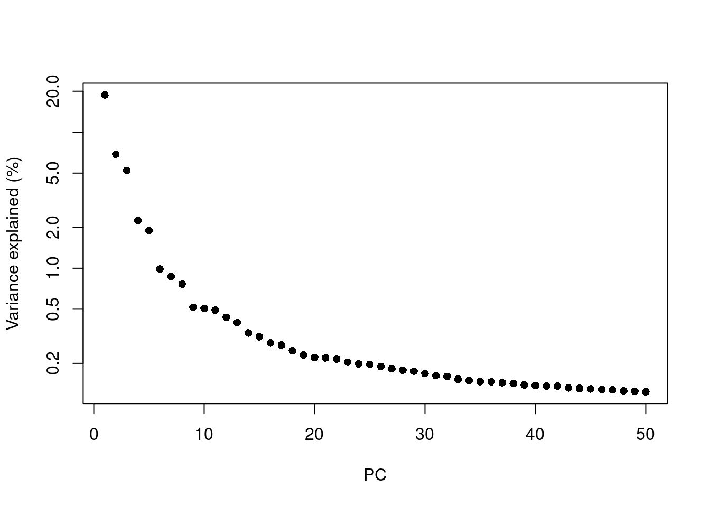
In general the # of PCs to use for downstream steps depends on the complexity and heterogeneity in the data, as well as the biological question. For this analysis we will retain the top 30, but you should explore how the downstream steps are affected by including fewer or more PCs.
In practice picking fewer PCs will identify fewer subpopulations, and picking more PCs will find more subpopulations, at the expense of potentially increased noise and longer runtime.
reducedDim(sce, "PCA")[1:4, 1:4] # the PCA is stored in the reducedDim() slot PC1 PC2 PC3 PC4
GCTGCAGTCCGATCTC -17.7865879 -5.494428 -3.609731 -2.2119402
ACTATGGAGGTCCCTG -0.0933944 7.195291 2.840164 0.0138008
ATTTCTGTCTCTATGT -17.8824692 -1.533912 -3.546737 0.5637093
TATCTGTAGGTGATAT -16.7533963 -2.843034 -5.289824 -1.3747961# we can subset the PCA to fewer dimensions, e.g. 30
reducedDim(sce, "PCA") <- reducedDim(sce, "PCA")[, 1:30]Dimensionality reduction for visualization
PCA
Early single cell studies simply used PCA to visualize single cell data. This is a fine approach for simple datasets, but often there is much more information present in higher principal components as we saw above
UMAP
The UMAP algorithm is popular, as it does a good job of preserving local differences between cells (e.g. differences in T-cell subtypes), while balancing global differences (e.g. a Neuron will be far away from a T-cell).
I usually don’t make too many changes to the parameters for UMAP, but these can be customized. The n_neighbors and min_dist arguments can have a large impact of the density and spread of the visualization.
set.seed(1234323523)
sce <- runUMAP(sce, dimred = "PCA") # adds another reducedDim()
reducedDims(sce)List of length 2
names(2): PCA UMAPplotUMAP is the plotting function for UMAPs.
plotUMAP(sce, colour_by = "CD3D")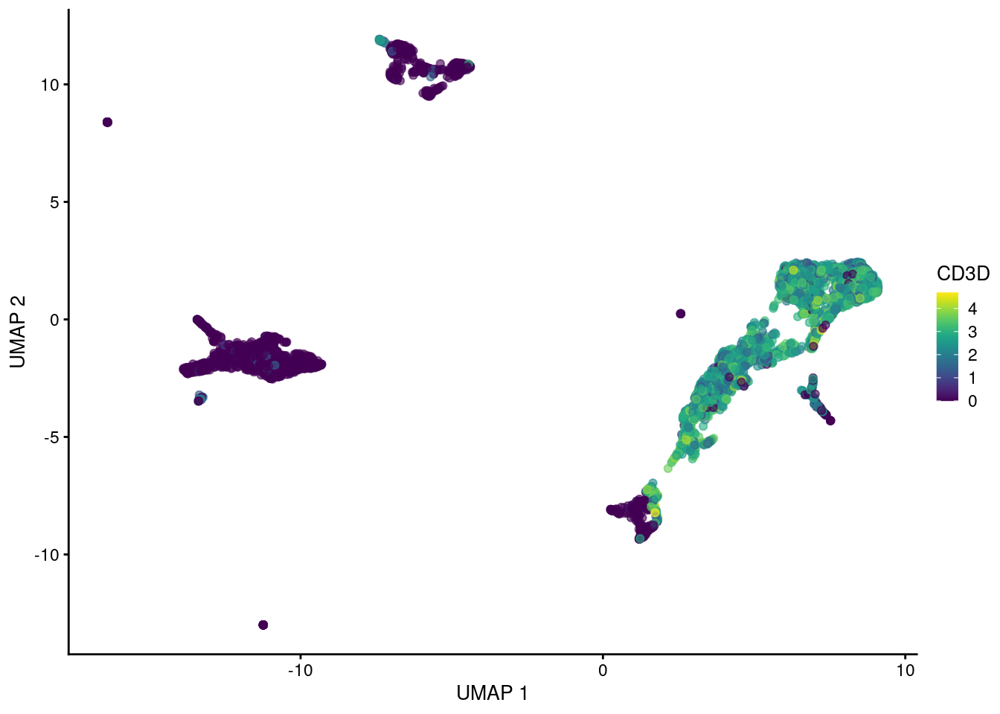
plotUMAP(sce, colour_by = "CD79A")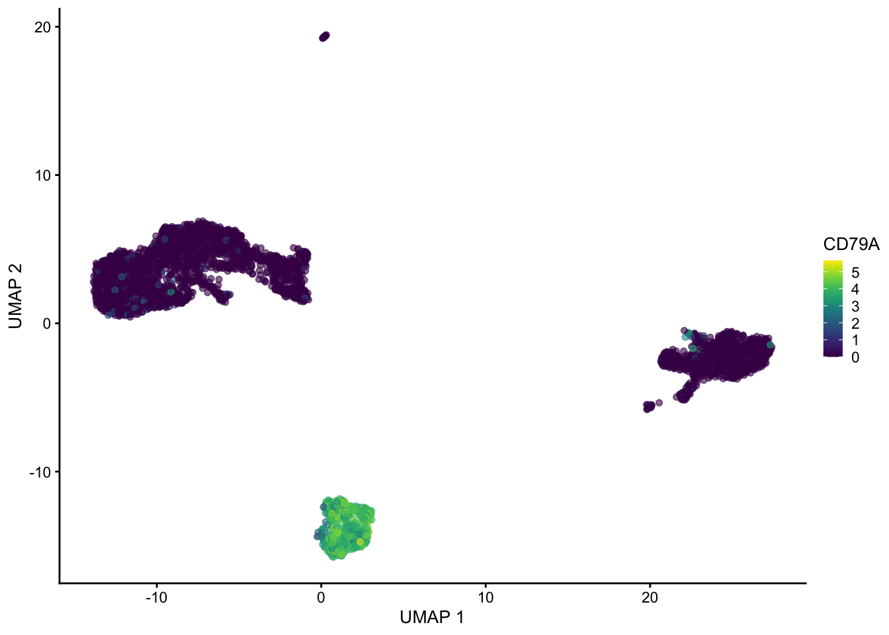
set.seed(1234323523)
sce <- runUMAP(sce, dimred = "PCA", n_neighbors = 100, min_dist = 0.5)
plotUMAP(sce, colour_by = "CD3D")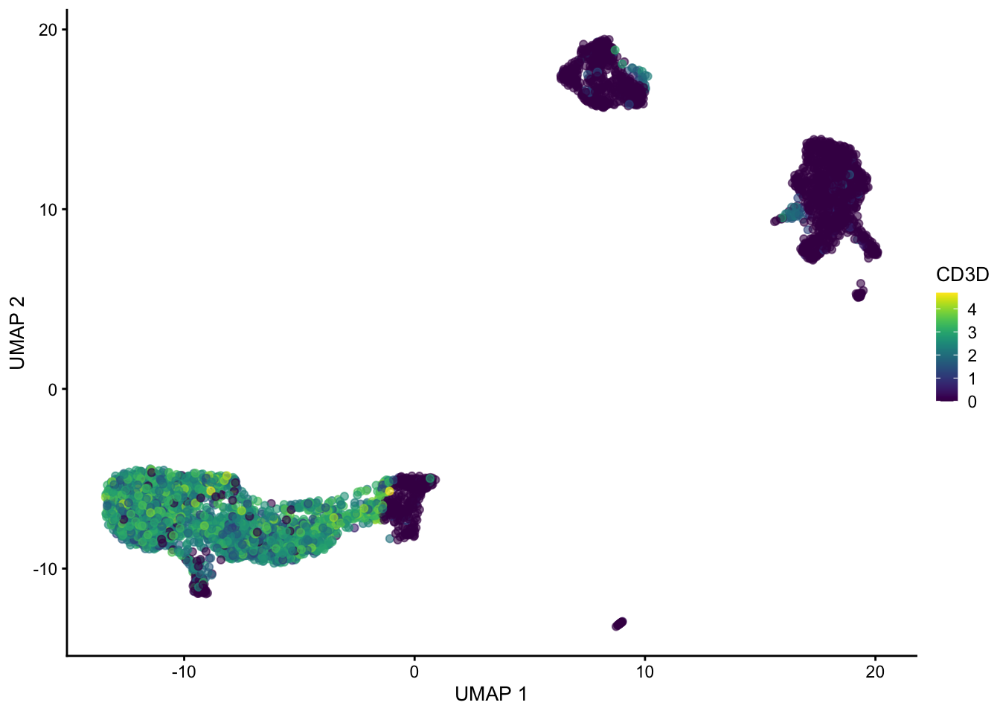
plotUMAP(sce, colour_by = "CD79A")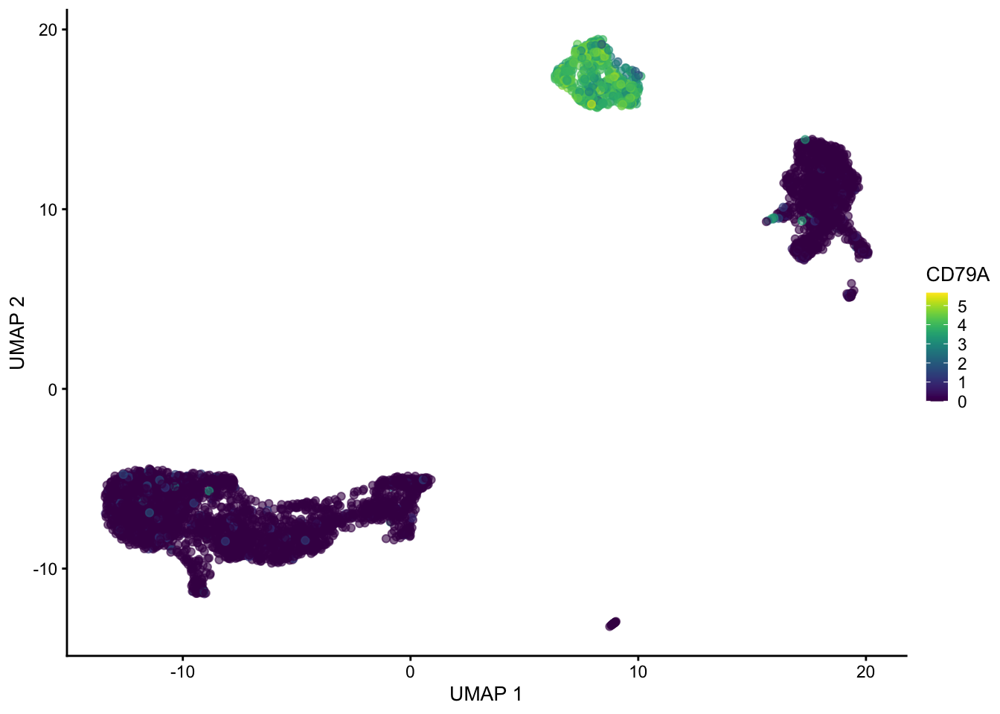
Hopefully these plots have convinced you that 1) interpreting a UMAP should be done with caution as the density of and distance between points is somewhat arbitrary 2) There are many ways to represent data in 2 dimensions. Deciding what is best depends on what point you are trying to emphasize with the visualization.
Often these visualizations are a convenient way to convey a lot information in a single plot but the actual UMAP coordinates are not very meaningful in a scientific sense.
Clustering single cell data
The PCA/UMAP plots above indicate that there are likely different cell types present in the data as we can see clusters. Next we will formally cluster the dataset to assign cells to clusters.
Graph based clustering methods are commonly used for single cell data, because they can scale to millions of cells, produce reasonable assignments, and have tuneable parameters. We can cluster the data using … clusterCells() from scran.
Note that the clustering is performed on the PCA matrix not the 2D UMAP plot
clusters
1 2 3 4 5 6 7 8 9 10 11 12 13 14 15 16
766 257 552 122 369 211 141 1409 52 74 55 63 44 47 103 97
17 18 19
163 24 16 sce$clusters <- clustersThe parameters of the clustering can be changed by changing the NNGraphParam. Here are the defaults:
library(bluster)
set.seed(10101010)
clusters <- clusterCells(sce,
use.dimred = "PCA",
BLUSPARAM = NNGraphParam(
k = 10,
type = "rank",
cluster.fun = "walktrap"
)
)
table(clusters)clusters
1 2 3 4 5 6 7 8 9 10 11 12 13 14 15 16
766 257 552 122 369 211 141 1409 52 74 55 63 44 47 103 97
17 18 19
163 24 16 sce$clusters <- clusters
plotUMAP(sce, colour_by = "clusters")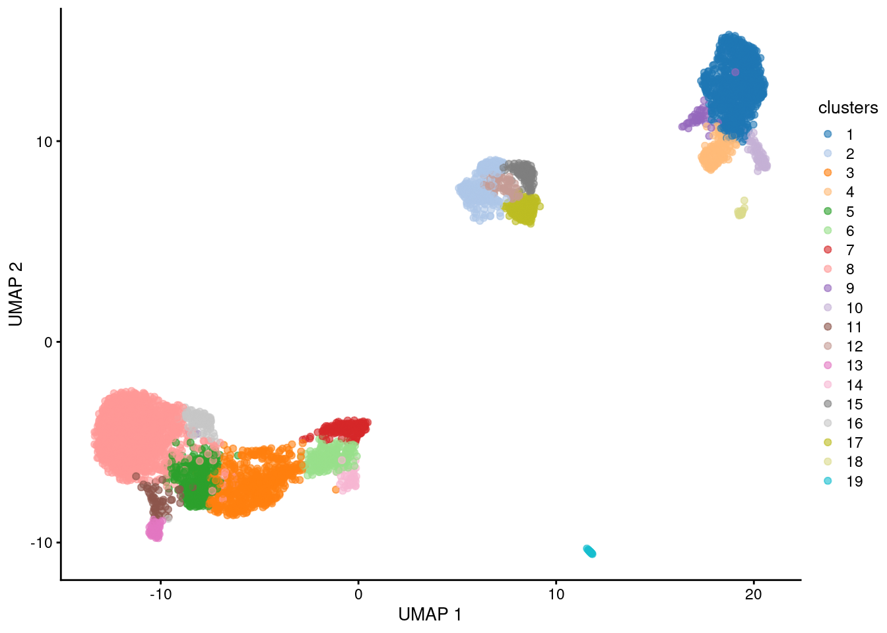
Generally increasing the # of neighbors will decrease the number of clusters and vice versa.
set.seed(12121212)
clusters <- clusterCells(sce,
use.dimred = "PCA",
BLUSPARAM = NNGraphParam(
k = 100,
type = "rank",
cluster.fun = "walktrap"
)
)
sce$coarse_clusters <- clusters
plotUMAP(sce, colour_by = "coarse_clusters")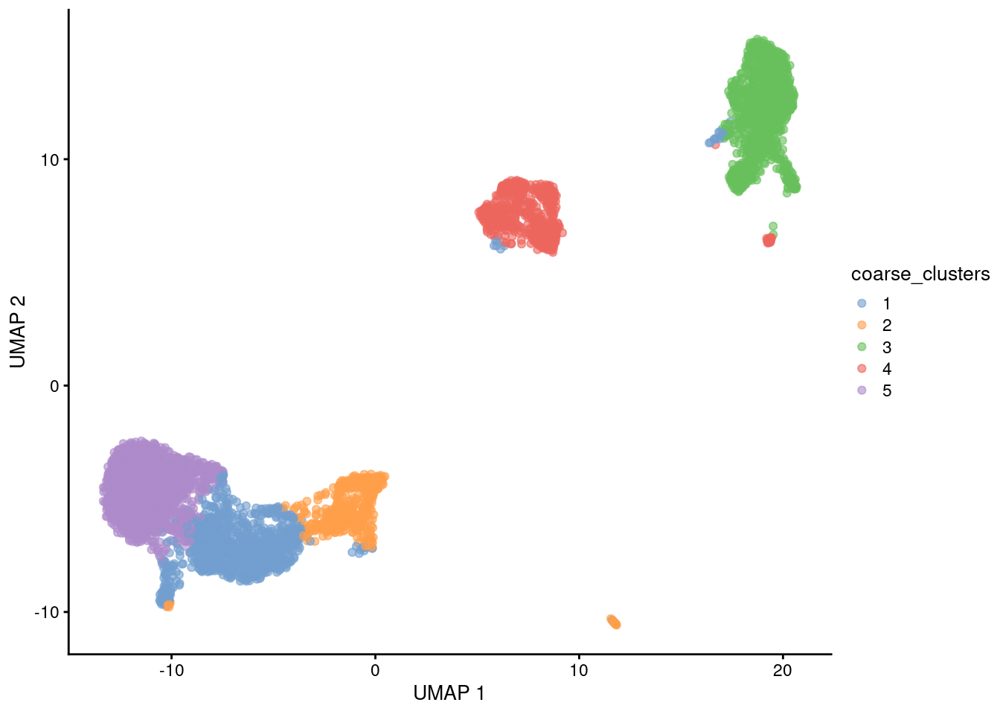
What clusters are the genes S100A8, CD79A and CD3G most highly expressed in? We can use the plotExpression() function to visualize the expression data in each cluster.
plotExpression(sce, features = c("S100A8", "CD79A", "CD3G"), x = "clusters")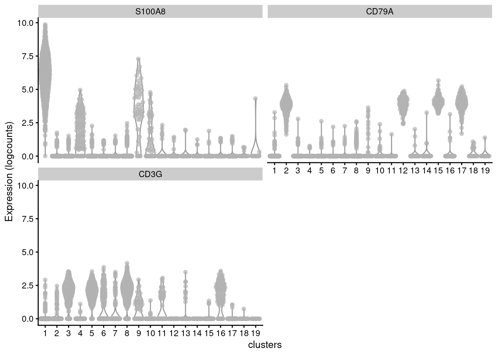
How many clusters?
Clustering algorithms produce clusters, even if there isn’t anything meaningfully different between cells. Determining the optimal number of clusters can be tricky and also dependent on the biological question.
Some guidelines:
Cluster the data into a small number of clusters to identify cell types, then recluster to generate additional clusters to define sub-populations of cell types.
To determine if the data is overclustered examine differentially expressed genes between clusters. If the clusters have few or no differentially expressed genes then the data is likely overclustered. Similar clusters can be merged post-hoc if necessary as sometimes it is difficult to use 1 clustering approach for many diverse cell populations. Using a reference-based approach to name cell types will also often merge similar clusters.
A hybrid approach is to first annotate major cell types using a small # of clusters (e.g. B-cell, T-cell, Myeloid, etc.), then subset the SingleCellExperiment object for each cluster and perform additional clustering to obtain ‘subclusters’ (e.g. b-cell-subset 1, b-cell-subset 2, t-cell-subset-1, etc.)
Finding marker genes for each cluster
Marker genes are genes that are specifically expressed in a cell type. We can identify these genes by performing differential expression analysis between clusters. We will use scoreMarkers() which will:
Compare many metrics for each gene between a pair of clusters
Perform these pairwise comparisons between every pair of clusters in the data
Summarize the metrics across all pairwise comparisons into a data frame, 1 for each cluster
The approach implemented by scoreMarkers() does not return any p-values for reasons described here. Statistical testing is invalidated because we clustered the data into groups based on the data itself, rather than by using an a priori group assignment. When we perform statistical testing on this group we are essentially testing the data again, which greatly inflates the significance of the pvalues.
scoreMarkers() will return a list of DataFrames, one for each cluster tested.
mrks <- scoreMarkers(sce, sce$clusters)
mrksList of length 19
names(19): 1 2 3 4 5 6 7 8 9 10 11 12 13 14 15 16 17 18 19To identify marker genes we will need to decide of cutoffs based on effect sizes. There are many reported by scoreMarkers().
colnames(mrks[[1]]) [1] "self.average" "other.average" "self.detected"
[4] "other.detected" "mean.logFC.cohen" "min.logFC.cohen"
[7] "median.logFC.cohen" "max.logFC.cohen" "rank.logFC.cohen"
[10] "mean.AUC" "min.AUC" "median.AUC"
[13] "max.AUC" "rank.AUC" "mean.logFC.detected"
[16] "min.logFC.detected" "median.logFC.detected" "max.logFC.detected"
[19] "rank.logFC.detected" Why are there so many columns of data and how does one decide what is a marker gene?
The problem is how do we define a marker gene. Is a marker gene a gene that is differentially expressed between 1 cluster and all other clusters? That could be too strict depending on the data, and could miss important gene expression differences between subtypes of cells.
Perhaps a marker gene should be differentially expressed between some, or at the extreme any of the clusters.
The output of scoreMarkers() allows you to filter the data in many different ways depending on what type of marker you want to identify. Importantly it doesn’t hide the complexity of this data. I highly recommend reading the chapter on marker gene detection from the OSCA book to understand how best to identify markers depending on the dataset you are analyzing.
We will use the AUC effect to rank markers. The AUC represents the probability that a randomly chosen observation from our cluster of interest is greater than a randomly chosen observation from the other cluster. A value of 1 means that the gene is upregulated in the cluster of interest and a value of 0 means that the gene is downregulated. 0.5 indicates no difference.
One can also rank on standardized log fold changes or the fold change in the detection rate.
We can either choose the mean, min, median, max, or rank AUC as a potential ranking, which all will select for marker genes with different patterns:
Paraphrasing from the OSCA book:
The most obvious summary statistic is the mean. For cluster X, a large mean effect size (>0.5 for the AUCs) indicates that the gene is upregulated in X compared to the average of the other groups.
Another summary statistic is the median, where a large value indicates that the gene is upregulated in X compared to most (>50%) other clusters.
The minimum value (min.*) is the most stringent summary for identifying upregulated genes, as a large value indicates that the gene is upregulated in X compared to all other clusters.
The maximum value (max.*) is the least stringent summary for identifying upregulated genes, as a large value can be obtained if there is strong upregulation in X compared to any other cluster.
The minimum rank, a.k.a., “min-rank” (rank.*) is the smallest rank of each gene across all pairwise comparisons. Specifically, genes are ranked within each pairwise comparison based on decreasing effect size, and then the smallest rank across all comparisons is reported for each gene. If a gene has a small min-rank, we can conclude that it is one of the top upregulated genes in at least one comparison of X to another cluster.
Here we will plot top genes ranked by mean.AUC for cluster 1.
cluster1_markers <- as.data.frame(mrks[[1]]) |> tibble::rownames_to_column("gene")
ordered <- cluster1_markers |>
dplyr::filter(mean.AUC > 0.5) |>
dplyr::arrange(desc(mean.AUC))
plotExpression(sce,
features = head(ordered$gene),
x = "clusters",
colour_by = "clusters"
)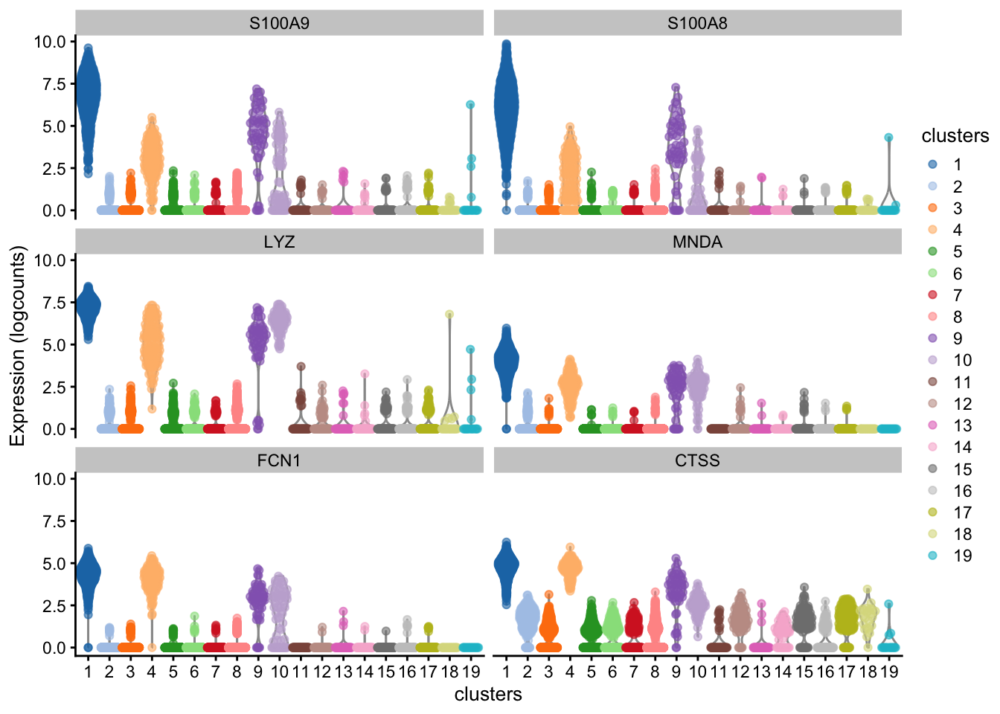
Next we will extract the top N markers from each cluster, ranked on mean.AUC, then plot the average expression of these markers in each cluster as a heatmap.
n_top_markers <- 5
top_markers <- purrr::map_dfr(mrks, ~ {
.x |>
as.data.frame() |>
tibble::rownames_to_column("gene") |>
dplyr::filter(mean.AUC > 0.5) |>
dplyr::arrange(desc(mean.AUC)) |>
dplyr::slice(1:n_top_markers)
}, .id = "cluster")
top_markers[1:10, 1:2] cluster gene
1 1 S100A9
2 1 S100A8
3 1 LYZ
4 1 MNDA
5 1 FCN1
6 2 BANK1
7 2 CD79A
8 2 MS4A1
9 2 TNFRSF13C
10 2 RALGPS2So how do we annotate each cluster as a cell type?
In the early days of single cell sequencing, this was often done manually, by visual inspection of key genes (hopefully) using expertise in the lab. As more single cell datasets have become available, it is more common to compare your data to other single cell data or to reference cell type expression profiles.
We we use clustifyr which was developed by a previous RBI fellow Rui Fu. There are also many other methods (e.g. SingleR)
clustifyr works by comparing the average gene expression in each cluster to a reference matrix that contains average gene signatures of reference cell types. The reference can be built from other single cell data, bulk-rna-seq, or other sources. Ranked spearman correlation is used to compare the reference to the clusters. Only the variable genes are used for the correlation.
In order to compare our dataset we need to use a publicly available reference dataset. Thankfully many datasets have been organized into a separate package: clustifyrdatahub. This is an extension of the ExperimentHub package on bioconductor that allows you to easily download and cache external datasets.
Loading required package: ExperimentHub# get reference dataset derived from a microarray experiment of sorted immune cell types
ref_hema_microarray()[1:5, 1:5]see ?clustifyrdatahub and browseVignettes('clustifyrdatahub') for documentationloading from cache Basophils CD4+ Central Memory CD4+ Effector Memory CD8+ Central Memory
DDR1 6.084244 5.967502 5.933039 6.005278
RFC2 6.280044 6.028615 6.047005 5.992979
HSPA6 6.535444 5.811475 5.746326 5.928349
PAX8 6.669153 5.896401 6.118577 6.270870
GUCA1A 5.239230 5.232116 5.206960 5.227415
CD8+ Effector Memory
DDR1 5.895926
RFC2 5.942426
HSPA6 5.942670
PAX8 6.323922
GUCA1A 5.090882But you can download any dataset that characterizes cell populations that interest you.
res <- clustify(
sce, # SingleCellExperiment object
ref_mat = ref_hema_microarray(), # cell type reference data
cluster_col = "clusters", # column in metadata with clusters
# don't add to SingleCellExperiment object, just return results
obj_out = FALSE,
# use variable genes for comparison
query_genes = top,
)object data retrieval complete, moving to similarity computationsee ?clustifyrdatahub and browseVignettes('clustifyrdatahub') for documentationloading from cacheusing # of genes: 1075similarity computation completed, matrix of 19 x 38, preparing outputres[1:12, 1:4] Basophils CD4+ Central Memory CD4+ Effector Memory CD8+ Central Memory
1 0.5370093 0.4111325 0.4176017 0.3936302
10 0.5945973 0.4591039 0.4655590 0.4433302
11 0.4386922 0.7151960 0.7115503 0.6798845
12 0.6333579 0.5402749 0.5289964 0.5160502
13 0.3935435 0.6535071 0.6516310 0.6321161
14 0.4656631 0.6099487 0.6324938 0.6493463
15 0.6258199 0.5493260 0.5378138 0.5284327
16 0.4883762 0.7668150 0.7549072 0.7346618
17 0.6277840 0.5580115 0.5459105 0.5343926
18 0.5650205 0.5267830 0.5237343 0.5021841
19 0.3379409 0.3154402 0.3177152 0.3003928
2 0.6210041 0.5744730 0.5678439 0.5518513library(ComplexHeatmap)
Heatmap(t(res))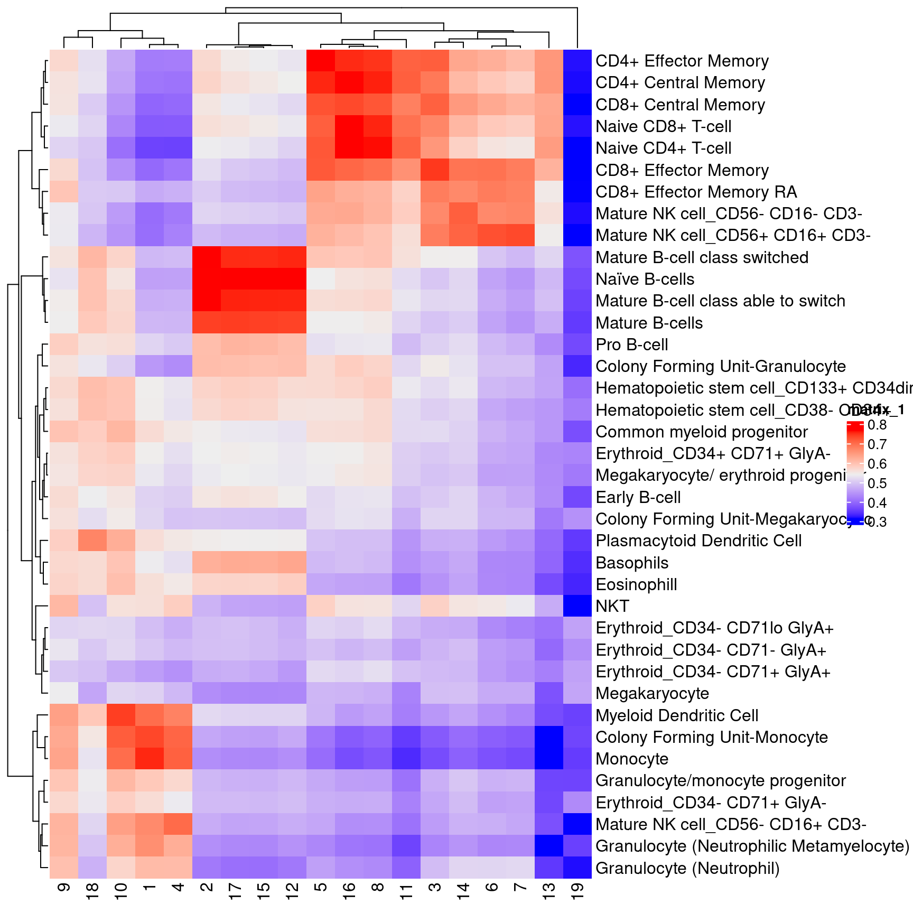
cor_to_call(res) # assign cluster to highest correlation cell type (above a threshold). Cell types lower than a threshold will be assigned as unassigned.# A tibble: 19 × 3
# Groups: cluster [19]
cluster type r
<chr> <chr> <dbl>
1 11 CD4+ Central Memory 0.715
2 13 CD4+ Central Memory 0.654
3 5 CD4+ Effector Memory 0.769
4 3 CD8+ Effector Memory 0.747
5 2 Mature B-cell class switched 0.772
6 14 Mature NK cell_CD56- CD16- CD3- 0.715
7 6 Mature NK cell_CD56+ CD16+ CD3- 0.729
8 7 Mature NK cell_CD56+ CD16+ CD3- 0.735
9 19 Megakaryocyte 0.462
10 1 Monocyte 0.756
11 4 Monocyte 0.713
12 10 Myeloid Dendritic Cell 0.743
13 9 Myeloid Dendritic Cell 0.641
14 12 Naïve B-cells 0.778
15 15 Naïve B-cells 0.794
16 17 Naïve B-cells 0.797
17 16 Naive CD4+ T-cell 0.781
18 8 Naive CD4+ T-cell 0.765
19 18 Plasmacytoid Dendritic Cell 0.673We can insert the classification results into the SingleCellExperiment object directly which will be called type.
set.seed(42)
sce <- clustify(
sce, # seurat object
ref_mat = ref_hema_microarray(), # cell type reference data
cluster_col = "clusters", # column in metadata with clusters
obj_out = TRUE,
# use variable genes for comparison
query_genes = top
)object data retrieval complete, moving to similarity computationsee ?clustifyrdatahub and browseVignettes('clustifyrdatahub') for documentationloading from cacheusing # of genes: 1075similarity computation completed, matrix of 19 x 38, preparing outputusing threshold of 0.6plotUMAP(sce, colour_by = "type")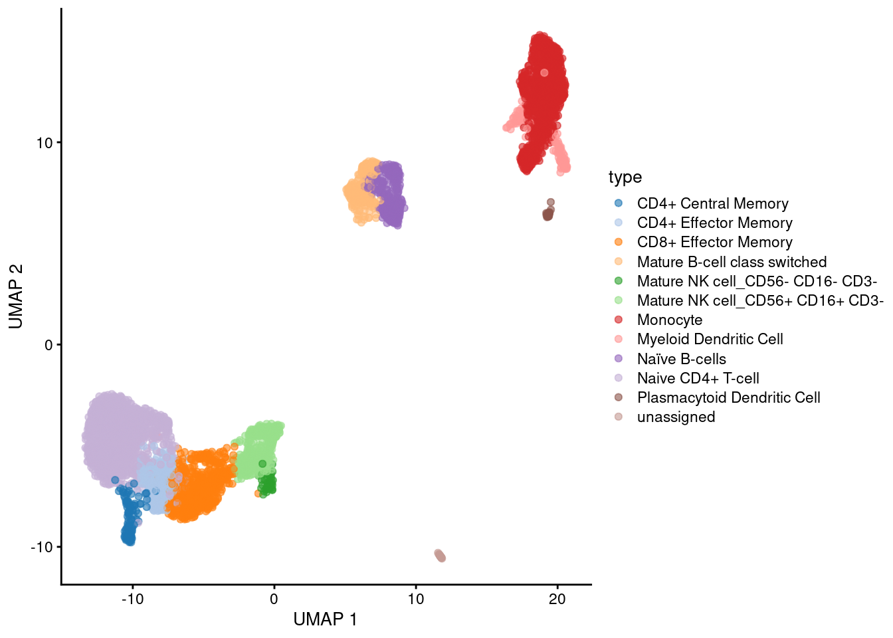
Saving your data and distributing datasets
You can share your SingleCellExperiment objects with collaborators by saving the object as an
.rdsfile.If you plan on publishing the data, then the best practices are to upload the UMI count matrix and your colData() data.frame containing the cell type annotations.
To save the UMI count matrix use write10xcounts() from the DropletUtils Bioconductor package.
mat <- counts(sce)
write10xCounts("path/to/output", mat)When saving the colData() it is also a nice gesture to include the UMAP coordinates that you used for the main visualizations in your manuscript. The clustering and UMAP coordinates are very hard to reproduce because of the non-deterministic elements of the algorithms.
cbind(colData(sce), reducedDim(sce, "UMAP")) |>
rownames_to_column("cell") |> ()
write_csv("cell-level-metadata.csv")